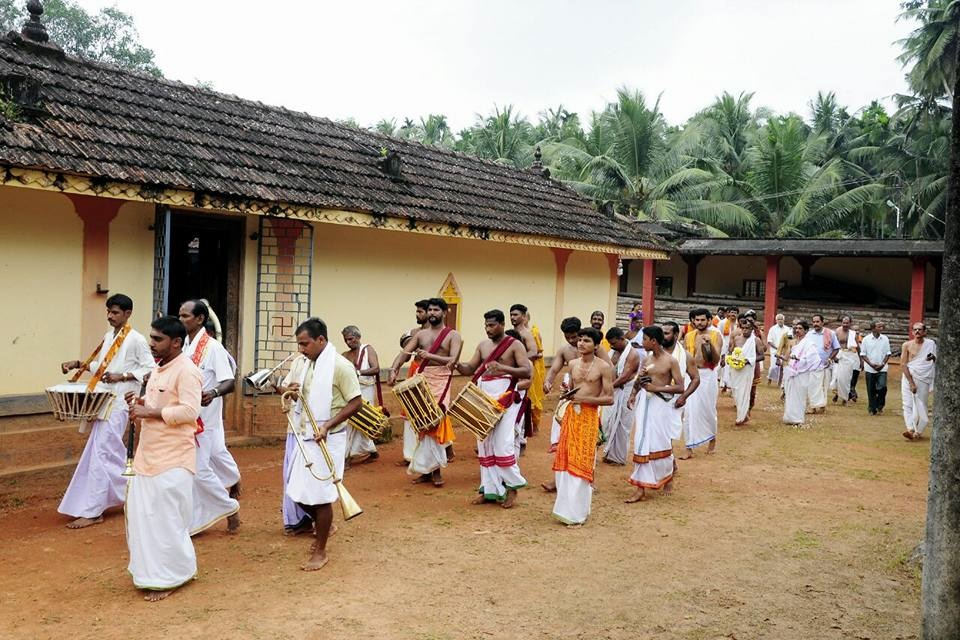
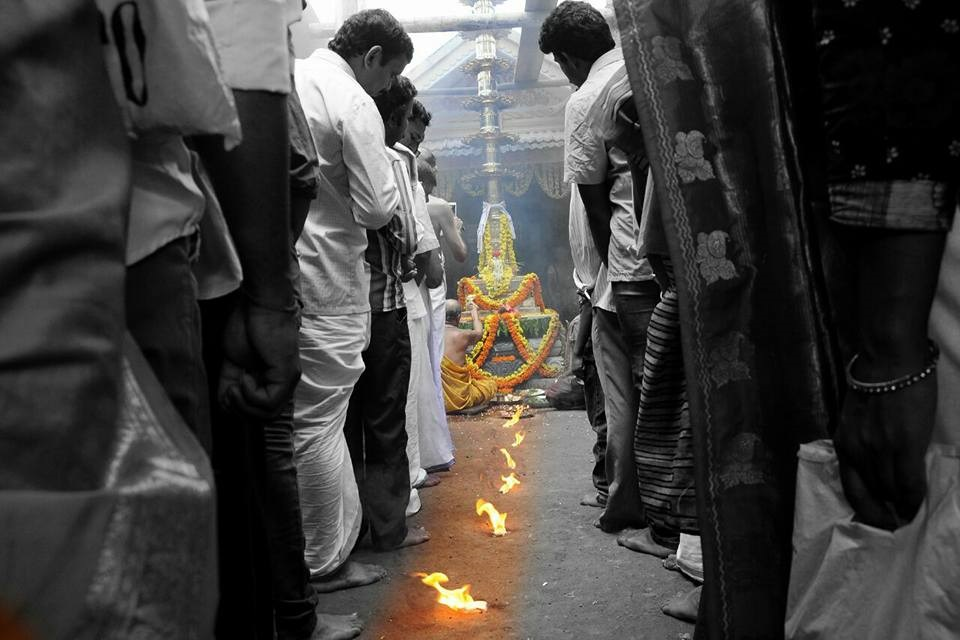

CONTACT US
ಸೇವಾ ವಿವರಗಳು
ದರ್ಶನ ಸಮಯಗಳು
ಶ್ರೀ ಶಂಕರನಾರಾಯಣ ದೇವಸ್ಥಾನ

1 / 2

ಶ್ರೀ ಶಂಕರನಾರಾಯಣ ದೇವಸ್ಥಾನ
2 / 2

ಶ್ರೀ ಶಂಕರನಾರಾಯಣ ದೇವಸ್ಥಾನ
❮
❯
ದರ್ಶನ ಸಮಯಗಳು
- ಬೆಳಿಗ್ಗೆ ನಡೆ ತರೆಯುವುದು 6.00 AM
- ಸಂಜೆ ನಡೆ ತರೆಯುವುದು 6.00 PM
ವಿ.ಸೂ ವಿಶೇಷದಿನಗಳಲ್ಲಿ ಪೂಜಾಸಮಯದಲ್ಲಿ ಬದಲಾವಣೆಇರುತ್ತದೆ.
ಪ್ರತೀ ದ್ವಾದಶಿದಿನದಂದು ಮಧ್ಯಾಹ್ನಪೂಜೆ
ಬೆಳಿಗ್ಗೆನಡೆಯುತ್ತದೆ.